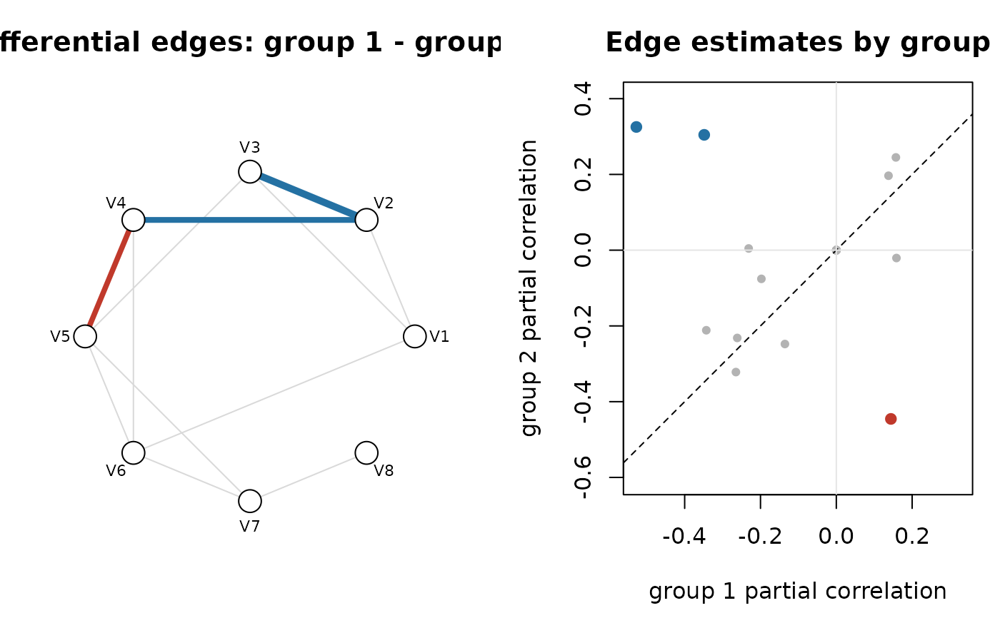

Tests which edges differ between two groups of an ssjgl fit,
by refitting ssjgl() with the same settings on permuted or
bootstrapped data.
Arguments
- fit
An
ssjglobject.- groups
Two distinct group indices (or group names) to compare. The difference is group 1 minus group 2.
- score
Scale of the comparison:
"pcor"(partial correlations, default) or"precision"(precision-matrix entries).- method
"permutation"(default) Rows of the two groups are pooled and the group labels shuffled (group sizes kept; any other groups are left as they are), and
ssjgl()is refittedBtimes. The null scores \(|\Delta|\) are pooled across all edges and permutations. Each edge's p-value is \((1 + \#\{null \ge |\Delta_{obs}|\}) / (1 + \#null)\), and the p-values are adjusted by Benjamini-Hochberg.selectedisp_adj < alpha."bootstrap"Rows are resampled with replacement within every group,
ssjgl()is refittedBtimes, andlower/upperare percentile \(1 - \alpha\) intervals for \(\Delta\).selectedmeans the interval excludes 0. This gives no multiplicity control.
- B
Number of permutations or bootstrap resamples. Default 100.
- alpha
BH level (permutation) or 1 - interval coverage (bootstrap). Default 0.05.
- Y
The list of data matrices
fitwas estimated from. IfNULL(default), theYargument offit$callis evaluated in the calling environment; supply it explicitly if that object has changed or is not available.- v0_index
Ladder step whose estimates are compared. Default: the last step.
- ...
Arguments passed to the
ssjgl()refits, overriding the settings stored infit(e.g.maxitr.emto make the refits faster).- x
An
ssjgl_diff_edgesobject.- n
Number of selected edges to print. Default 10.
Value
A data frame of class "ssjgl_diff_edges", one row per edge
\(i < j\) in upper.tri() order, with columns
- i, j
Variable indices.
- node1, node2
Variable names.
- est_g1, est_g2
Estimates in the two groups on the
scorescale.- diff
est_g1 - est_g2.- pvalue, p_adj
Permutation p-value and its BH adjustment (
method = "permutation").- lower, upper
Bootstrap percentile interval for
diff(method = "bootstrap").- selected
Logical: called differential.
- prob_dissimilar
\(P(\xi = 1)\) (only if the fit is doubly).
Attributes: method, score, groups,
group_names, B (successful refits), alpha,
v0_index, and null_scores (the pooled null, permutation)
or boot_diffs (a B x edges matrix, bootstrap).
Details
Refits use the arguments stored in fit$args, so they repeat the
whole v0 ladder of the original fit. The resampling indices are drawn in
the calling R session, so results are reproducible with
set.seed() and do not depend on how the refits are run.
Parallel refits. If the future.apply package is installed,
the refits are run with future.apply::future_lapply(), so they are
parallel under any future::plan() other than sequential, e.g.
future::plan(future::multisession, workers = 4).
prob_dissimilar. With doubly = TRUE the table also
has prob_dissimilar, the EM's posterior probability
\(P(\xi_{jk} = 1)\) that edge \((j, k)\) is in the slab of the
cross-group similarity penalty, i.e. is only weakly shrunk towards equality
across groups. It is shared by all groups, comes from the point-estimating
EM, and is not a calibrated probability that the edge differs
between groups. In practice it can be uninformative: in one real
fit (TCGA PI3K pathway, p = 28, group penalty), every edge with
\(P(\delta = 1) > 0.5\) also had \(P(\xi = 1) > 0.5\). Use the
permutation p-values for inference.
Column names. Where the concepts match, the columns follow
multiGGMr's diff_summary() and select_diff_edges()
(i, j, lower, upper), so the shared columns of
the two packages' tables can be bound together.
Examples
# \donttest{
sim <- simulate_ssjgl_data(K = 2, p = 8, n = 60, seed = 1)
fit <- ssjgl(sim$data_list, lambda0 = 1, lambda1 = 1, lambda2 = 1,
standardize = TRUE, impute = FALSE)
set.seed(1)
de <- diff_edges(fit, Y = sim$data_list, B = 20)
de
#> <ssjgl_diff_edges>
#> group 1 vs group 2, pcor scale, permutation (B = 20), v0 step 3
#> 3 of 28 edges selected at BH-adjusted p < 0.05
#> i j node1 node2 est_g1 est_g2 diff pvalue p_adj selected
#> 2 3 V2 V3 -0.527 0.325 -0.853 0.00178 0.0166 TRUE
#> 2 4 V2 V4 -0.348 0.304 -0.653 0.00178 0.0166 TRUE
#> 4 5 V4 V5 0.144 -0.446 0.590 0.00178 0.0166 TRUE
plot(de)

# }